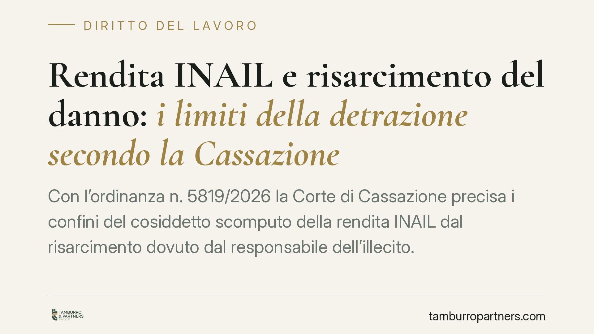
Rendita INAIL e risarcimento del danno: i limiti della detrazione secondo la Cassazione
Con l'ordinanza n. 5819/2026 la Corte di Cassazione precisa i confini del cosiddetto scomputo della rendita INAIL dal risarcimento dovuto dal responsabile dell'illecito. La rendita…
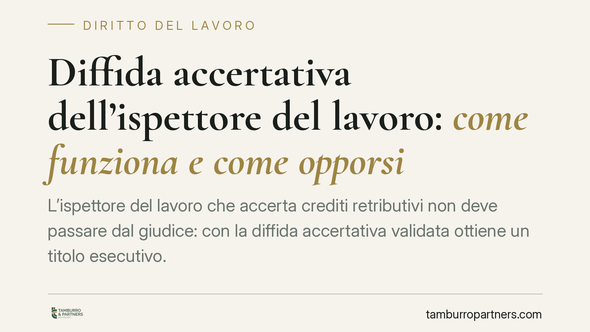
Diffida accertativa dell'ispettore del lavoro: come funziona e come opporsi
L'ispettore del lavoro che accerta crediti retributivi non deve passare dal giudice: con la diffida accertativa validata ottiene un titolo esecutivo. Una recente pronuncia d'appell…

Infortuni mortali sul lavoro: la condanna del datore può fondarsi sulla prova indiziaria
Con la sentenza n. 5697/2026 la Cassazione penale conferma un principio dalle ricadute concrete: negli infortuni mortali sul lavoro il datore può essere condannato anche senza test…

Bonus assunzioni e pubblicazione dell'offerta sul SIISL: cosa sapere
Le anticipazioni di stampa indicano che, per fruire di alcuni sgravi contributivi sulle assunzioni, i datori dovrebbero pubblicare l'offerta di lavoro sul SIISL e riportare l'Id va…

IVA su fatture false: rimborso possibile solo senza danno per l'Erario
Con l'ordinanza n. 28368/2026 la Cassazione chiarisce un punto delicato: chi versa l'IVA su fatture per operazioni inesistenti può chiederne il rimborso soltanto provando che non r…

Mediazione obbligatoria: chi deve avviarla e quando, secondo i tribunali
Sei pronunce recenti ridisegnano i confini della mediazione obbligatoria prevista dall'art. 5 del D.lgs. 28/2010. I giudici chiariscono quando la procedura è davvero richiesta, chi…

Assegno di divorzio una tantum: perché non è deducibile dall'Irpef
Con la sentenza n. 29593/2026 la Cassazione ribadisce un principio dalle conseguenze fiscali concrete: l'assegno di divorzio versato in un'unica soluzione non abbatte l'imponibile …

Ricovero ospedaliero e assenza non comunicata: quando scatta il licenziamento
Il Tribunale di Udine affronta un nodo ricorrente: il ricovero ospedaliero copre sempre l'assenza del dipendente, anche se questi non avvisa l'azienda? La risposta è no. L'impedime…

Licenziamento via WhatsApp: forma libera sì, ma attenzione ai termini a difesa
Il Tribunale di Udine ha ritenuto valido un licenziamento per giusta causa comunicato via WhatsApp, anche senza firma e con il dipendente ricoverato in ospedale. Ha però condannato…
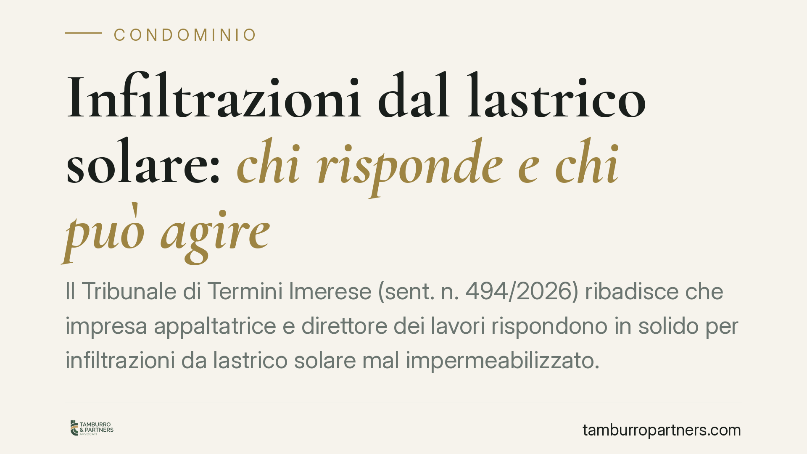
Infiltrazioni dal lastrico solare: chi risponde e chi può agire
Il Tribunale di Termini Imerese (sent. n. 494/2026) ribadisce che impresa appaltatrice e direttore dei lavori rispondono in solido per infiltrazioni da lastrico solare mal impermea…

Ferie nel distacco: chi deve autorizzarle?
Il lavoratore in distacco che chiede le ferie all'azienda presso cui opera, senza l'ok del datore distaccante, rischia di vederle non riconosciute. Una pronuncia di merito del Trib…
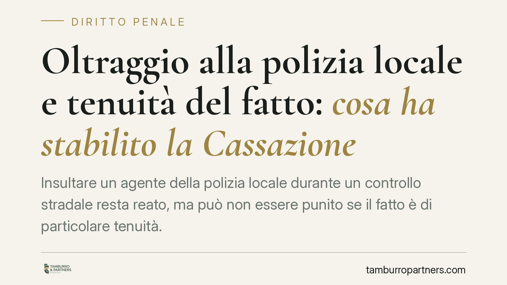
Oltraggio alla polizia locale e tenuità del fatto: cosa ha stabilito la Cassazione
Insultare un agente della polizia locale durante un controllo stradale resta reato, ma può non essere punito se il fatto è di particolare tenuità. Lo ha chiarito la Corte di Cassaz…
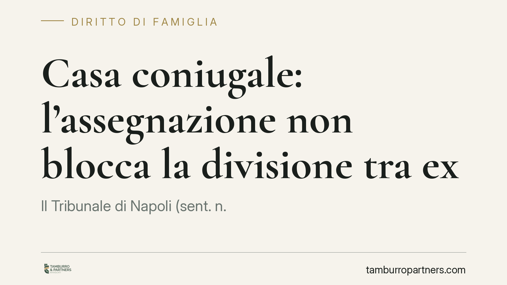
Casa coniugale: l'assegnazione non blocca la divisione tra ex
Il Tribunale di Napoli (sent. n. 10697/2026) ribadisce un principio spesso frainteso: l'assegnazione della casa familiare a un coniuge non impedisce all'altro, se comproprietario, …

Domanda giudiziale sulle quote di Srl: niente effetto prenotativo
Le Sezioni Unite della Cassazione hanno chiarito che la domanda giudiziale avente a oggetto quote di Srl non può essere iscritta nel registro delle imprese con effetto prenotativo.…
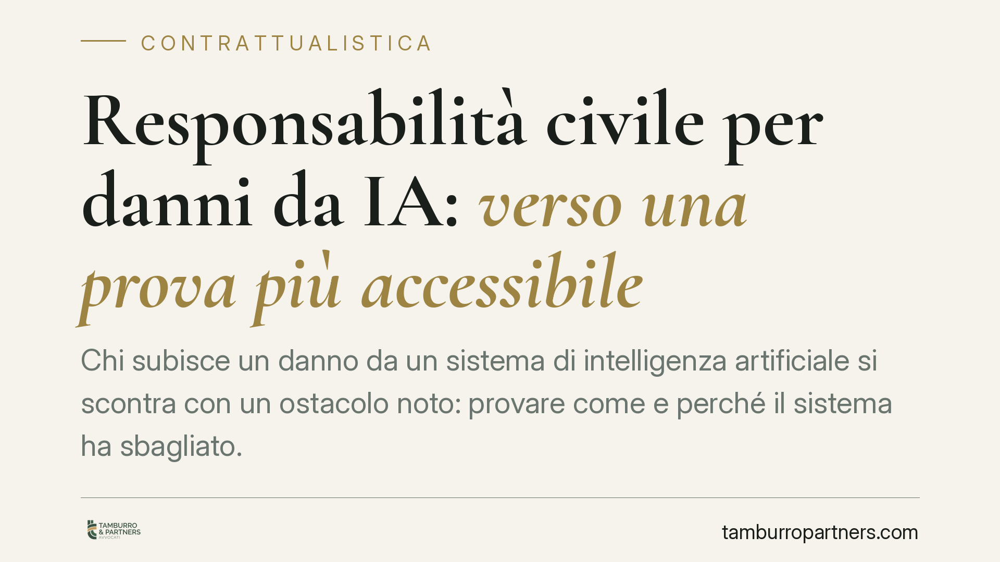
Responsabilità civile per danni da IA: verso una prova più accessibile
Chi subisce un danno da un sistema di intelligenza artificiale si scontra con un ostacolo noto: provare come e perché il sistema ha sbagliato. Il dibattito normativo europeo e ital…
Screenshot di WhatsApp come prova penale: quando valgono e quando no
Uno screenshot di una chat può decidere un processo penale, ma la sua utilizzabilità dipende da come è entrato nel fascicolo. La differenza tra un messaggio consegnato dalla vittim…
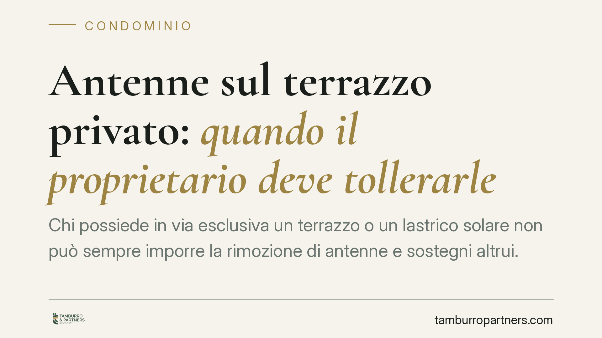
Antenne sul terrazzo privato: quando il proprietario deve tollerarle
Chi possiede in via esclusiva un terrazzo o un lastrico solare non può sempre imporre la rimozione di antenne e sostegni altrui. Una recente pronuncia del Tribunale di Napoli ribad…
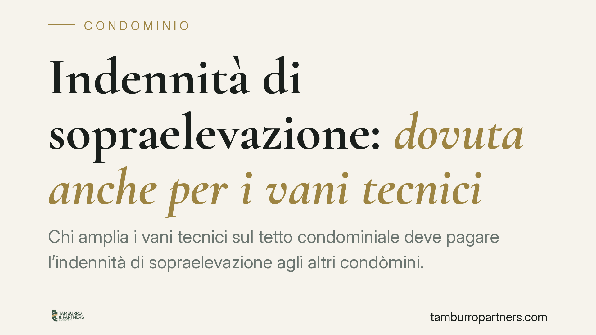
Indennità di sopraelevazione: dovuta anche per i vani tecnici
Chi amplia i vani tecnici sul tetto condominiale deve pagare l'indennità di sopraelevazione agli altri condòmini. Lo afferma la Cassazione in tre ordinanze del 2025, chiarendo anch…
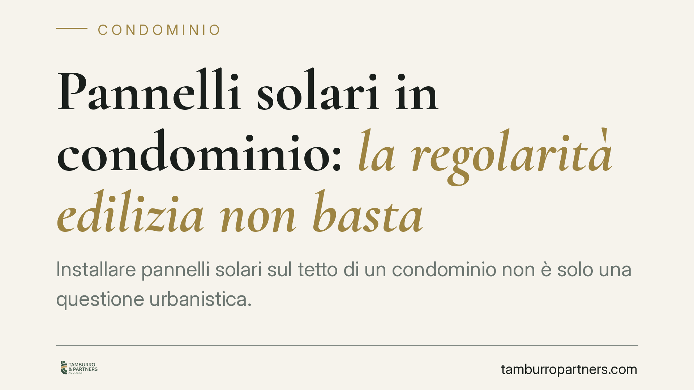
Pannelli solari in condominio: la regolarità edilizia non basta
Installare pannelli solari sul tetto di un condominio non è solo una questione urbanistica. Un titolo edilizio regolare, come la CILA, copre il profilo amministrativo ma non legitt…
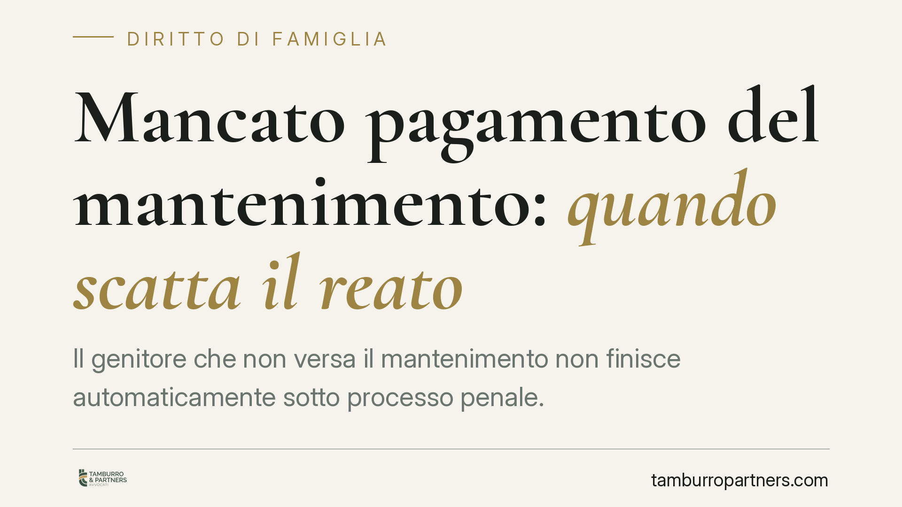
Mancato pagamento del mantenimento: quando scatta il reato
Il genitore che non versa il mantenimento non finisce automaticamente sotto processo penale. La giurisprudenza distingue tra chi non può pagare per una reale impossibilità economic…

Figlio mai riconosciuto: il padre risponde del danno endofamiliare
La nascita di un figlio fa sorgere doveri genitoriali a prescindere dal riconoscimento formale. Secondo un consolidato orientamento della Cassazione, il genitore che si sottrae a q…
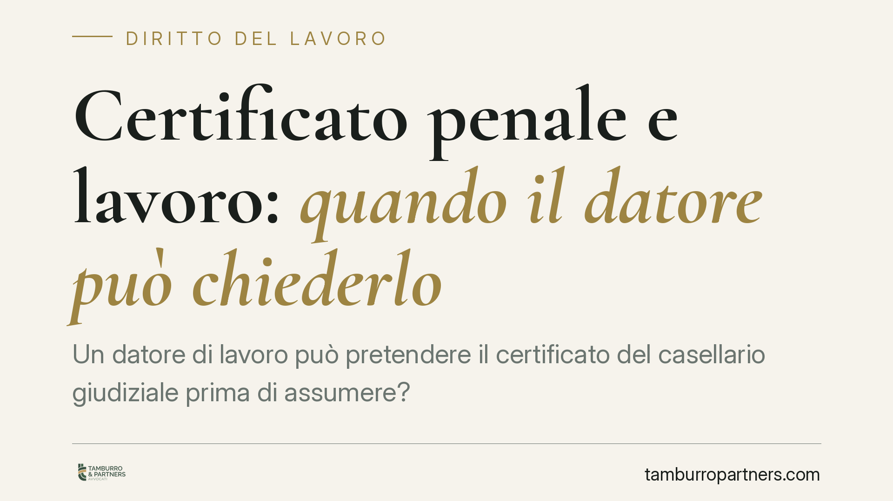
Certificato penale e lavoro: quando il datore può chiederlo
Un datore di lavoro può pretendere il certificato del casellario giudiziale prima di assumere? La regola generale dice di no, ma esistono eccezioni precise, prima fra tutte quella …

Lavoro su piattaforma digitale: le tutele in arrivo con la direttiva UE
La direttiva europea sul lavoro mediante piattaforme introduce una presunzione legale di subordinazione e limiti alla gestione algoritmica del rapporto. Il recepimento italiano è a…

Casa coniugale: l'assegnazione dura solo se il figlio ci abita davvero
L'assegnazione della casa coniugale non è un diritto a tempo indeterminato. La Corte di Cassazione ha chiarito che il presupposto è la convivenza stabile ed effettiva del figlio co…
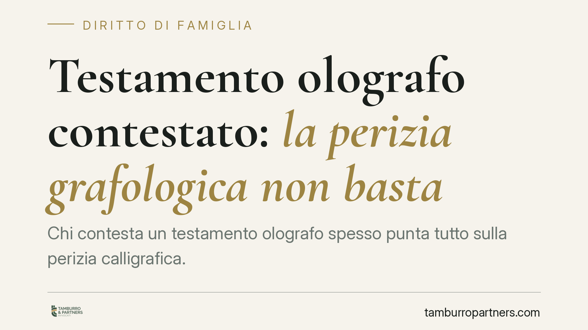
Testamento olografo contestato: la perizia grafologica non basta
Chi contesta un testamento olografo spesso punta tutto sulla perizia calligrafica. Ma la giurisprudenza di legittimità ricorda che il giudice non è vincolato alle conclusioni del g…
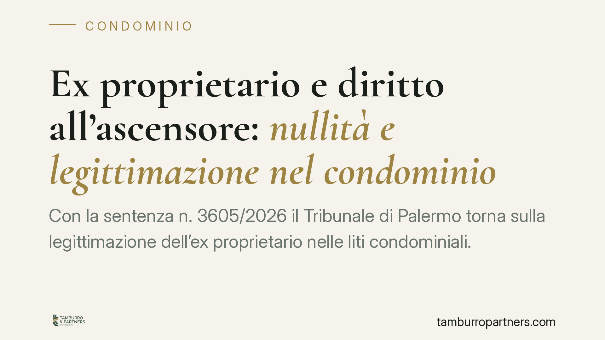
Ex proprietario e diritto all'ascensore: nullità e legittimazione nel condominio
Con la sentenza n. 3605/2026 il Tribunale di Palermo torna sulla legittimazione dell'ex proprietario nelle liti condominiali. La pronuncia chiarisce che, perso il diritto di impugn…
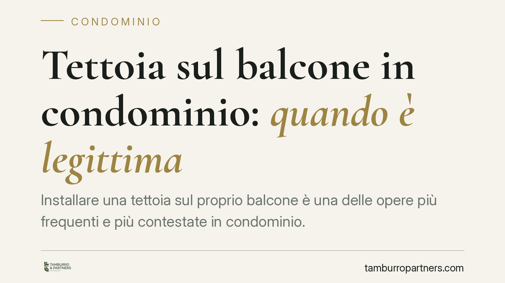
Tettoia sul balcone in condominio: quando è legittima
Installare una tettoia sul proprio balcone è una delle opere più frequenti e più contestate in condominio. Il punto non è banale: un conto è il rapporto con il Comune e i titoli ed…

Adeguamento ISTAT nelle locazioni commerciali: niente arretrati sulle quote non richieste
La Corte di Cassazione torna sul tema dell'adeguamento ISTAT nei contratti di locazione commerciale. Il principio è netto: l'aggiornamento del canone non opera in automatico, richi…
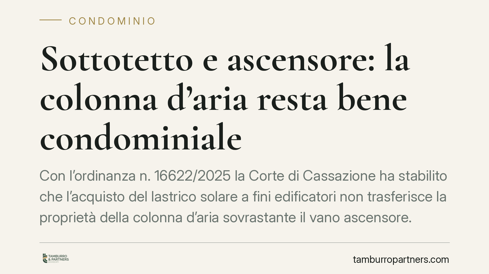
Sottotetto e ascensore: la colonna d'aria resta bene condominiale
Con l'ordinanza n. 16622/2025 la Corte di Cassazione ha stabilito che l'acquisto del lastrico solare a fini edificatori non trasferisce la proprietà della colonna d'aria sovrastant…

ATP e parti assenti: la relazione tecnica fa prova anche contro chi non ha partecipato
Il Tribunale di Santa Maria Capua Vetere chiarisce un punto delicato: la relazione dell'accertamento tecnico preventivo entra nel giudizio di merito come prova anche verso chi non …